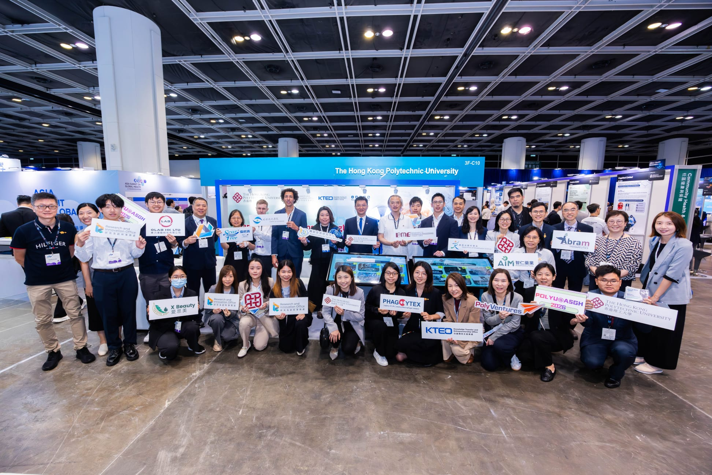
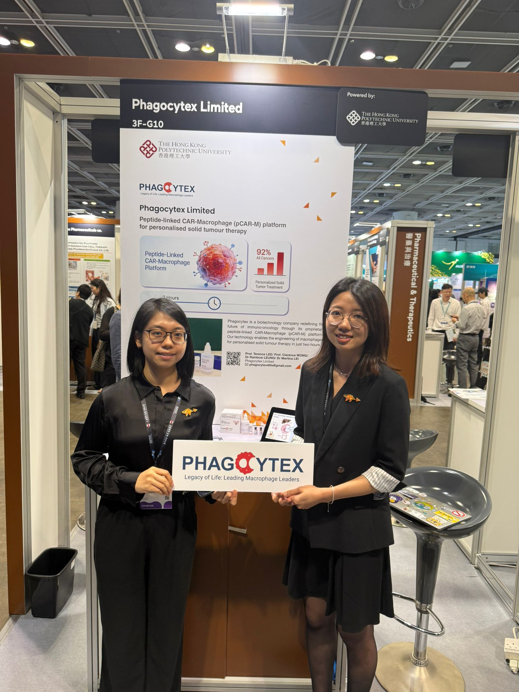
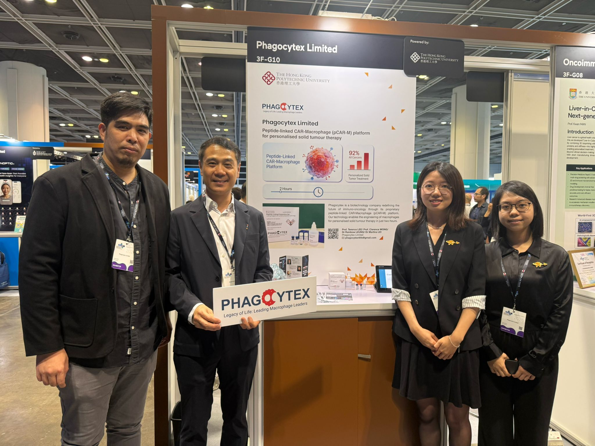

Event | 11–12 May 2026
Phagocytex joins PolyU healthcare start-ups at ASGH 2026.




Today, we're attending the 6th Asia Summit on Global Health (ASGH 2026) in Hong Kong, jointly organised by the Government of the Hong Kong SAR and the HKTDC. This year's theme — "Fuelling Healthcare Breakthroughs" — couldn't be more fitting for our journey.
Walking the floor at ASGH 2026 has been humbling and inspiring. We've connected with brilliant researchers, clinicians, and fellow innovators — and we're especially grateful to KTEO and PolyU for the opportunity to be here.
Come find us at Booth 3F-G10 if you're at the summit today. We'd love to meet you. Thank you to the organisers and everyone who's stopped by. This is just the beginning.
View event profile